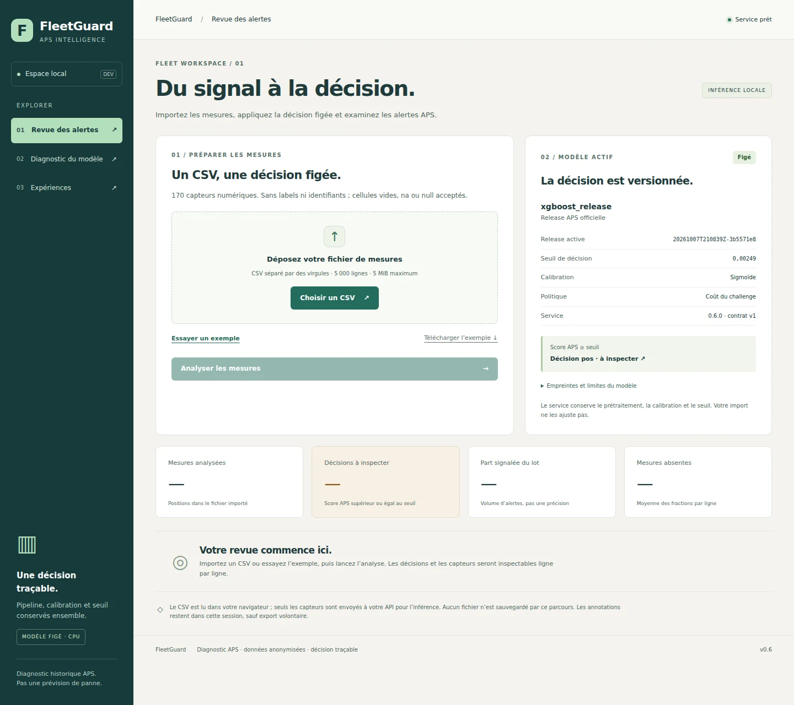

Évaluer avant d’optimiser
Baselines explicites, partitions par groupes de doublons et séparation des rôles d’entraînement, de calibration et de choix du seuil.
Projet personnel · ML appliqué · 2026
Classifier les défaillances APS en tenant compte du coût des erreurs.
Sur le jeu public Scania APS (système de pression d’air), classifier les défaillances et choisir un seuil selon le coût des erreurs, puis rendre la décision inspectable dans une application.

Sur les 16 000 observations du test officiel : 95,73 % de rappel et 43,05 % de précision. 359 cas APS détectés sur 375 ; 16 défaillances manquées et 475 fausses alertes. Coût : 10 × 475 + 500 × 16 = 12 750 unités du challenge, pas des euros économisés. Résultats consignés dans la model card du dépôt.
LE COMPROMIS MESURÉ
Test officiel · 16 000 observations. Une défaillance manquée coûte 500 unités ; une fausse alerte, 10.
Résultats & model cardSur un jeu déséquilibré, un bon taux d’exactitude peut masquer les défaillances les plus coûteuses. Le défi Scania attribue un coût de 10 à une fausse alerte et de 500 à une panne APS manquée. C’est ce compromis qui doit guider la décision.
Baselines explicites, partitions par groupes de doublons et séparation des rôles d’entraînement, de calibration et de choix du seuil.
Le modèle, le prétraitement, la calibration et le seuil sont enregistrés ensemble. Le test officiel est évalué après ce gel.
API FastAPI, revue de lots CSV et interface React. Les scores et les données manquantes restent visibles pour interpréter une décision.
Le prétraitement, le modèle, la calibration et le seuil sont figés avant le test officiel. Rappel et précision se lisent ensemble : détecter davantage de cas APS implique ici de nombreuses fausses alertes.
Relier une métrique ML à une décision opérationnelle, sans dissimuler le prix à payer en fausses alertes.
Classification sur un jeu public anonymisé, pas prévision d’une panne future. Les résultats ne valident pas un usage en flotte réelle. L’infrastructure AWS est préparée dans le dépôt ; un déploiement AWS effectif n’est pas établi par le rapport consulté. Le choix des hyperparamètres et la calibration ne sont pas entièrement indépendants : ce protocole ne constitue pas une validation imbriquée.
Contact
Pour une opportunité professionnelle ou un sujet de recherche, contactez-moi.
Île-de-France · Mobilité France
Français courant · Anglais courant · Arabe langue maternelle